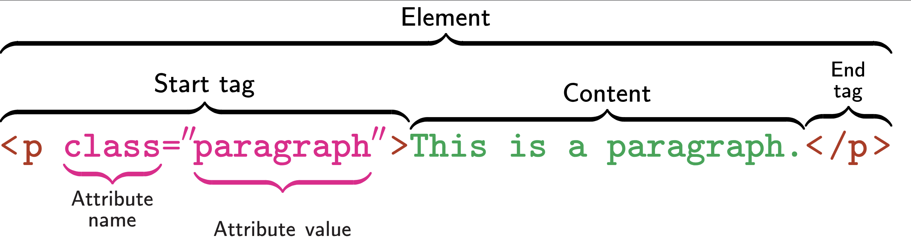

HTML
HTML - HyperText Markup Language - is the language used to write web pages
We have avoided writing HTML directly, in favor of Markdown
But you will have to read HTML
In a web browser, right click and “View Source” on a page
HTML Elements
HTML is written as a nested series of elements:

Important Elements
There are many HTML elements; some important ones are:
body: Body (the ‘mean’ of a page)h1, h2, …: Headersdiv: Division (generic container)p: Paragraph (most text goes in these)table: Table (often how data is displayed)ul, ol: Lists (unordered and ordered)li: List Item (for both list types)a: Anchors (used for linking)
Important Elements
Other useful elements:
script: Javascript - the code that implements interactivitystyle: CSS - formatting and appearance
You won’t use these directly, but they are everywhere
HTML Element Selection
The SelectorGadget can be used to practice selecting elements on web pages
#id will select by ID (“name”)type will select all elements of that type.class will select all elements with that class[attribute] will select elements with that attribute[attribute="value"] will select elements with that attribute and valuesel1 sel2 will select elements matching sel2 that are inside a sel1
e.g. , tr .odd will select the odd rows of a gt table
Advanced CSS Selectors
CSS Selector Pseudo-classes can be used to implement more specific logic
first-of-type (e.g. , table:first-of-type gets the first table)nth-of-type (e.g. , h2:nth-of-type(2) gets the second h2)not (e.g. , tr:not(.odd) gets all table rows without the odd class)
HTML Anchors
Anchors (a elements) are probably the most important part of HTML
Confusingly, anchors are both links and destinations.
Anchors can reference:
Another page (http://URL)
A particular part of another page (http://URL#place)
A particular part of the same page (#place)
Quarto supports cross-linking with anchors
HTML Anchors
Incoming link anchor:
<a id="#fish"> Content </a>
Links to http://page#fish will go straight to that spot
Outgoing link anchor:
<a href="https://baruch.cuny.edu"> Baruch </a>
Clicking text Baruch will go to Baruch website
HTML Tables
HTML Tables are often used for showing data:
<table> - Top level container<thead> and <tbody> - Separate header and body<trow> - Rows<td> - Table data (cells)
Can be much fancier - will see several examples in exercises
rvest
The rvest package can be used to manipulate HTML in R:
Get HTML by either read_html or resp_body_html if using httr2
Select elements with html_elements("selector")
Same syntax as SelectorGadget
Use html_element if you only want the first
Eventually need to extract content
html_text and html_text2 (removes whitespace)html_attr gets attribute values (e.g. , link targets)html_table will attempt to parse a table automatically
Example
Using httr2 to get the names of all 5 Mini-Projects
library (rvest)read_html ("https://michael-weylandt.com/STA9750/miniprojects.html" ) |> html_element ("#mini-projects" ) |> html_elements ("h4" ) |> html_text2 ()
[1] "Mini-Project #00: Course Set-Up"
[2] "Mini-Project #01: Assessing the Impact of SFFA on Campus Diversity One-Year Later"
[3] "Mini-Project #02: How Do You Do ‘You Do You’?"
[4] "Mini-Project #03: Who Goes There? US Internal Migration and Implications for Congressional Reapportionment"
[5] "Mini-Project #04: Going for the Gold"
Breakout Exercise #01
Return to your breakout rooms for Exercise #01
Use html_element() to extract the course table
Use html_table() to convert to a data frame
JavaScript Websites
JavaScript is a great tool, but R doesn’t know about it
What you see might not be what R sees
Make sure to consider “raw” HTML
Often ‘hijacks’ important elements to add new features
Focus on standard HTML elements
Breakout Exercise #02
Return to your breakout rooms for Exercise #02
Finding a table in a more complex website
Pulling out desired data
Making a map of results (optional)
read_html_live
rvest also provides tools for interacting with sites as shown in the browser
User interface is a bit different - we have to load the page explicitly and interact with a persistent object:
<- read_html_live ("https://en.wikipedia.org/wiki/List_of_City_University_of_New_York_institutions" )$ view ()$ html_elements (".jquery-tablesorter" )
Should remind you of Python’s obj.method() syntax
This is advanced, so don’t worry too much about it until you need it
Non-Tabular Data
Often, data will not be in a nice table
Need to manually build a data.frame
Build each data frame and ‘combine’
map |> list_rbind() idiomDATA <- rbind(DATA, NEW_DATA) idiom
Loops
Recall the basic structure of a loop in R:
for (item in container){do_something_with (item)
Accumulate data
<- tibble ()for (item in container){<- do_something_with (item)<- tibble (col1= new_results |> get_val1 (), col2= new_results |> get_val2 ())<- rbind (all_results, new_tibble)
Example
Getting info about all pre-assignments
library (rvest)<- read_html ("https://michael-weylandt.com/STA9750/preassignments.html" ) |> html_element ("#pre-assignments" ) |> html_elements ("section" )<- tibble ()for (pa in preassigns){= pa |> html_element ("h4" ) |> html_text2 ()= pa |> html_elements ("p:last-of-type" ) |> html_text2 ()<- tibble (name = name, description = description)<- rbind (pa_details, pa_df)
Example
Functional syntax is a bit more compact
library (rvest)<- read_html ("https://michael-weylandt.com/STA9750/preassignments.html" ) |> html_element ("#pre-assignments" ) |> html_elements ("section" )<- function (pa){<- pa |> html_element ("h4" ) |> html_text2 ()<- pa |> html_elements ("p:last-of-type" ) |> html_text2 ()tibble (name = name, description = description)<- preassigns |> map (parse_pa) |> list_rbind ()
Example
When vectorization is possible (via html_elements) - even cleaner:
library (rvest)<- read_html ("https://michael-weylandt.com/STA9750/preassignments.html" ) |> html_element ("#pre-assignments" ) |> html_elements ("section" )<- preassigns |> html_elements ("h4" ) |> html_text2 ()<- preassigns |> html_elements ("p:last-of-type" ) |> html_text2 ()<- tibble (name = names, description = descriptions)
Breakout Exercise #03
Return to your breakout rooms for Exercise #03
Examining a multi-page site
Pulling out data from non-tabular elements